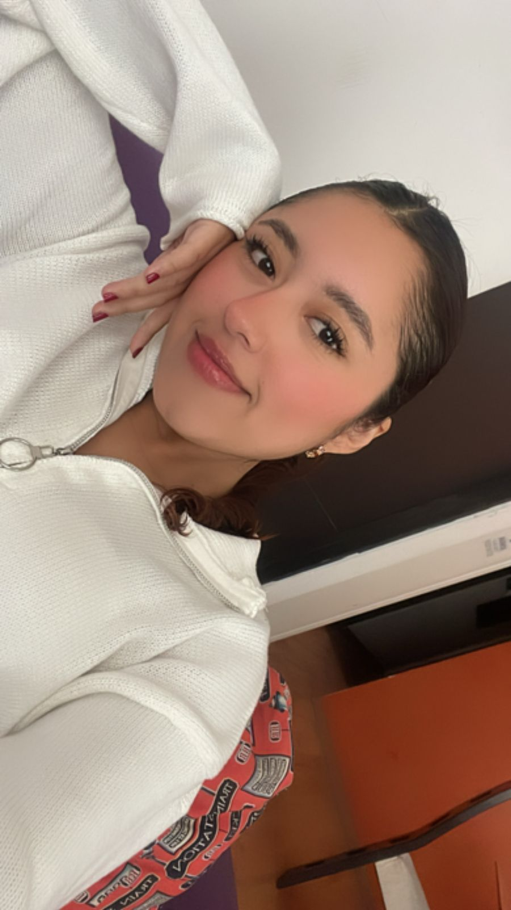

Luz Nahomi Garcia Hernandez
Mi nombre es Luz Nahomi Garcia Hernandez, tengo 22 años, nací el 1 de septiembre del año 2002 en la ciudad de Orizaba Veracruz. Actuakmente estoy cursano mi noveno semestre de la Licenciatura en Diseño Gráfico, en la Benemerita Universidad Autonoma de Puebla. Amo aprender cosas nuevas y nuevos materiales para realizar manualidades, como crochet, ceramica fria, recina, baile, musica, etc. Espero al terminar la carrera poder encontrar un trabajo que me guste en el que me sienta comoda y donde pueda agarrar la mayor experiencia posible, para cuando desee abrir mi propio negocio.
Me gusta mucho la pintura al oleo, la musica en especifico el pop en español (Humbe, CD9, Kenia Os y Alex Ponce) y el Kpop (Stray kids, Ateez, Super Junior, Woosung y Lisa). Me gustaría ir a un concierto por lo menos de cada uno de ellos, actualmente he ido solamente a un concierto de CD9 y el proximo mes de abril asistire al primer concierto de Stray Kids en México en el estadio GNP